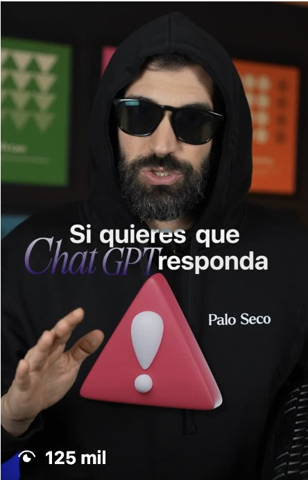
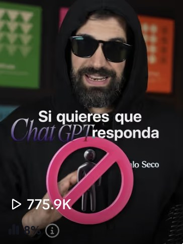
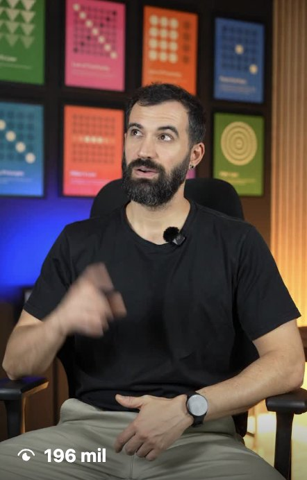
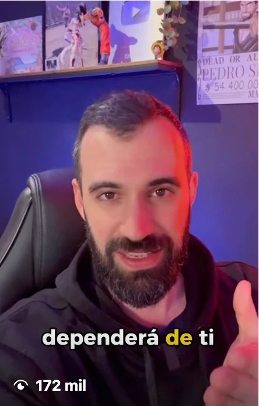
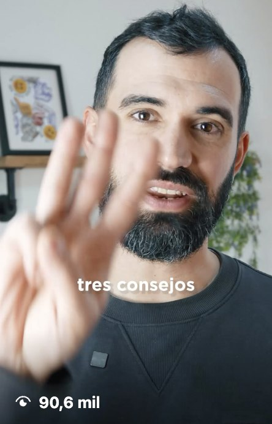
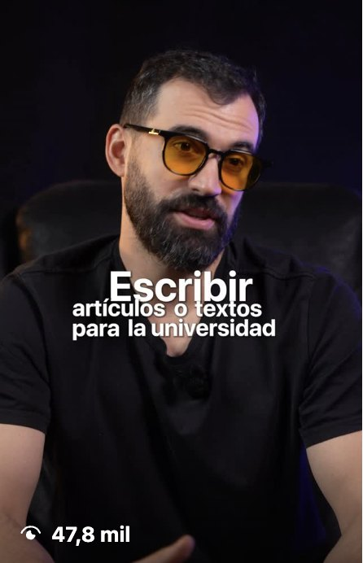
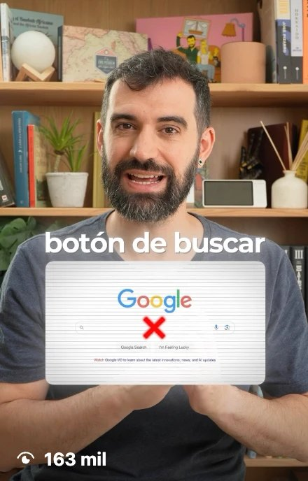
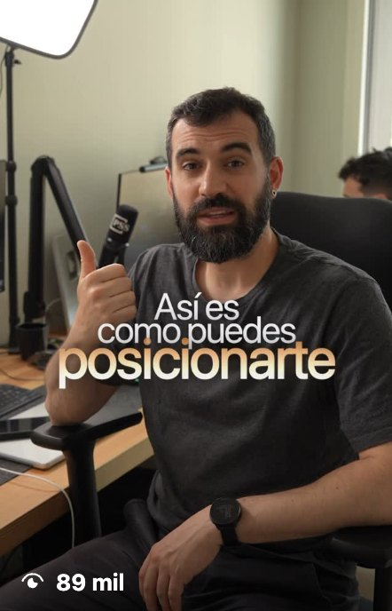
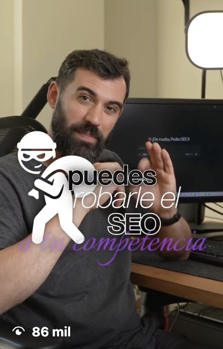
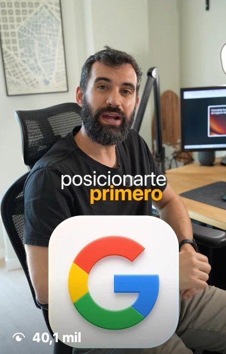

Cuando Pedro, más conocido en redes como Pedro SEO, llegó a nosotros, no necesitaba más seguidores. Lo que necesitaba era un contenido que se viera profesional para atraer a clientes hacia su agencia y su negocio.
Desde diciembre de 2024, en Mediatic nos encargamos de su contenido vertical para Instagram, TikTok y YouTube Shorts. En este artículo explicamos cómo hemos trabajado su estrategia, el antes y el después, y qué ha supuesto para él: más clientes y alumnos cualificados con una dedicación mínima, y más tiempo para su agencia y para su familia.

Quién es Pedro SEO
Pedro es cofundador, junto a su socio Óscar, de Palo Seco, una agencia especializada en SEO y diseño web que ayuda a empresas de distintos sectores a ganar visibilidad en internet. Lleva 12 años al frente de la agencia y 7 creando contenido.
Su marca personal es el principal motor de su negocio, que se apoya en dos grandes vías de monetización:
- Clientes para la agencia. En Palo Seco trabajan con más de 30 clientes, y la mayoría llegaron a la agencia o la conocieron gracias a las redes sociales de Pedro.
- Alumnos para su formación y su comunidad, que ya reúne a más de 1.000 personas.
A estas dos vías de monetización se suman los patrocinios, las ponencias y los eventos propios, como La Sociedad Secreta del Marketing.
En este tiempo también le hemos acompañado en un cambio importante: el traslado de su vida y de la agencia de Barcelona a Andorra. Hemos vivido con él dos etapas muy distintas y seguimos grabando juntos allí donde esté. En nuestro canal de YouTube tenemos dos vídeos «detrás de cámaras» en los que mostramos qué hay detrás de una grabación con Pedro. En el primero, explicamos cómo fue su traslado de Barcelona a Andorra y cómo grabamos allí con él. En el segundo, viajamos con él a Galicia para grabar un vídeo para su canal.
Por qué decidió delegar su contenido
Pedro conocía bien las redes sociales. Durante su primer año creando contenido se encargó de todo él mismo y después delegó la edición durante varios años. Pero llegó un punto en que quiso dar el salto a un servicio completo, que se ocupara también de la estrategia, los guiones, la grabación y la publicación.
El primer motivo fue el tiempo. Como explica en la entrevista que grabamos con él, llegó a dedicar unas cuatro horas al día a pensar ideas, escribir guiones, grabar, editar y publicar. Horas que dejaba de invertir en la parte de su negocio que le genera ingresos.
El segundo fue la imagen:
«Yo no necesito visitas, ya tengo los seguidores, ya tengo la autoridad de marca. Lo que me falta ahora es una autoridad de imagen, y con vosotros la tengo.»
Pedro Serrano
A día de hoy, a Pedro el contenido le ocupa 6 horas al mes: 1 hora en revisar guiones, 4 horas en grabar el contenido y 1 hora en revisar el contenido una vez ya está editado. Con eso salen los 10 vídeos de todo el mes.
Contenido en los primeros meses
En un periodo tan largo como casi dos años, las estrategias pueden cambiar mucho. Como agencia, es nuestra responsabilidad ir a por el objetivo que quiere el cliente y moldear la estrategia cuando ese objetivo cambia.
Con Pedro ha pasado exactamente eso. Al principio el objetivo era ganar notoriedad y nos dirigíamos a un público más genérico, que buscaba ser experto en inteligencia artificial, en marketing y en muchas otras cosas a la vez. De ahí que en su momento hiciéramos ese tipo de contenido.
Durante los primeros meses, su contenido abarcaba temas muy diversos del mundo digital: inteligencia artificial, automatizaciones, crecimiento en redes sociales y marketing digital en general.
Siguiendo esa estrategia, dirigida a ese público, conseguimos un vídeo que superó las 900.000 visualizaciones: 125.000 en Instagram y 775.900 en TikTok. Si quieres conocer este vídeo en detalle y la estrategia que seguimos, la analizamos en este vídeo de nuestro canal.


Aparte de este, también conseguimos muchos otros vídeos que se viralizaron dentro de su sector, como los que recogemos aquí. Algunos alcanzaron las 195.000 y 90.000 visualizaciones en Instagram, o las 239.000 y 174.000 en TikTok.




Contenido desde hace unos meses
En la agencia nos dimos cuenta de que, para el objetivo que tenía Pedro, quizá era mejor cambiar el tipo de avatar al que nos dirigíamos: centrarnos en alguien que solo buscara SEO, en lugar de un público interesado en muchos temas, que diluía a quienes de verdad podían ser clientes o alumnos. Por eso propusimos otra estrategia: cambiar el avatar y especializarnos únicamente en SEO. A Pedro le pareció bien y, desde entonces, su contenido habla solo de SEO.
Centrarse en un nicho tiene una consecuencia evidente: el público potencial es más pequeño y es más difícil que un vídeo alcance el millón de visualizaciones. A cambio, cada visualización vale mucho más, porque quien ve el vídeo tiene un interés real en lo que Pedro ofrece.
Por eso muchos de sus vídeos rondan de media las 10.000 o 5.000 visualizaciones: es un público más de nicho. Pero de vez en cuando hay temas que generan mucho interés dentro de su sector y mucha repercusión, y de ahí los resultados que mostramos aquí: vídeos sobre SEO local, novedades de Google Maps o cambios en el buscador han llegado a 163.000 y 90.000 visualizaciones en Instagram, y a 121.000 y 54.000 en TikTok.




Pero el cambio más importante está en la calidad de la interacción. Con un número de visualizaciones similar, los vídeos reciben más comentarios y de personas mucho más interesadas en el SEO: potenciales clientes para la agencia y alumnos para su formación.
Importancia de centrarse en un nicho
El caso de Pedro confirma algo que vemos a diario en la agencia: es mucho mejor centrarse en un nicho y dirigirse a un público muy concreto que tratar de llegar a un público más genérico, con más visitas pero menos cualificadas.
Lo vimos, por ejemplo, con Gisela Jorba. En un sector técnico como la micropigmentación, nos centramos únicamente en hablar a las personas que buscaban ese servicio y ese tipo de formación. El resultado es mucho mejor que si hubiéramos hecho contenido de estética en general.
O con David y su negocio, De Profundis, una tienda de material de buceo. Hablamos de buceo técnico, que es mucho más específico que el buceo en general o que los deportes de mar sin más.
Entonces, ¿cuáles son las consecuencias de centrarse en un nicho?
- Menos visualizaciones, pero de más calidad. Cada persona que ve el vídeo es un posible cliente.
- Es más fácil tocar el problema real del cliente. Y cuando el contenido conecta con ese problema, llegan los comentarios, los seguidores y los mensajes.
- Menos competencia. En un nicho es mucho más fácil situarse entre los referentes.
- Más autoridad. Quien habla de una sola cosa transmite que la domina.
- Más conversión. Un público que se siente identificado está más dispuesto a comprar.
Beneficios para Pedro y su negocio
Cuando trabajas el contenido para captar clientes en redes sociales, mucha gente tiende a pensar que las visualizaciones son el objetivo, pero nada más lejos de la realidad. Lo que importa no son las visualizaciones en sí, sino las personas y la interacción que generas: la proporción de visualizaciones que acaba convirtiéndose en una respuesta.
En el caso de Pedro, el beneficio se nota en tres cosas:
- Clientes más cualificados para su agencia. Al hablar solo de SEO, quienes ven sus vídeos y le escriben son empresas que necesitan posicionar su web, es decir, potenciales clientes de Palo Seco.
- Más público para su formación. La misma audiencia interesada en el SEO es la que se convierte en alumno y se suma a su comunidad.
- Ahorro de tiempo. Pasó de dedicar unas cuatro horas al día a crear contenido a unas seis horas al mes. Este ahorro le permite estar más centrado en otras áreas de su negocio, hacerlo crecer más y dedicar más tiempo a su vida personal y a su familia.
Y es que esto no es algo que digamos nosotros: lo dice él en una entrevista que le hicimos hace poco, donde valoraba el servicio:
«Para mí la clave es sobre todo la visión estratégica y el ahorro de tiempo que me proporcionáis.»
Pedro Serrano
Esta es la entrevista completa que le hicimos a Pedro, y que te dejamos a continuación:
 ▶
▶Y si quieres conocer toda la estrategia con más detalle, la analizamos en este vídeo de nuestro canal.
Conclusión
El caso de Pedro SEO muestra algo muy importante: tener una gran comunidad, hablar de un tema genérico y conseguir vídeos virales, como el de más de 5 millones de visualizaciones que tiene anclado en su perfil, no te garantiza conseguir negocio. Para conseguirlo hay que tocar ciertas palancas clave, como el público al que te diriges y el tipo de contenido que haces.
Y aunque sepas tocarlas y te funcionen, siempre vas a acabar dedicándoles tiempo. Por eso, contar con una agencia externa que mejore tus resultados y reduzca al mínimo el tiempo que le dedicas es algo que no tiene precio. En el caso de Pedro, el resultado se nota en más clientes para su agencia, más alumnos para su formación y solo seis horas al mes de dedicación.
Y no es el único caso: Palo Seco también confía en nosotros para el contenido de sus clientes, como la Clínica Dra. Marina Garrido, cuyo caso de éxito también puedes leer. Y si quieres conseguir resultados así para tu marca, hablemos.
Preguntas frecuentes
¿Quién es Pedro SEO?
Pedro SEO es el nombre en redes de Pedro Serrano, cofundador de la agencia de SEO y diseño web Palo Seco. Es uno de los divulgadores de marketing digital más seguidos de España, con más de 241.000 seguidores en Instagram y más de 237.000 suscriptores en YouTube.
¿Es mejor hacer contenido viral o contenido de nicho?
Depende del objetivo. El contenido viral consigue más visualizaciones, pero no siempre clientes. El contenido de nicho llega a menos personas, pero a un público mucho más cualificado. En el caso de Pedro SEO, centrarse solo en el SEO aumentó la calidad de los comentarios y de los contactos.
¿Cuánto tiempo dedica Pedro SEO a su contenido?
Unas 6 horas al mes. Mediatic graba con él una vez al mes, en una sesión de unas cuatro horas en la que se preparan los 10 vídeos del mes. A eso se suma alrededor de una hora para revisar los guiones y otra para revisar los vídeos editados.
¿Qué beneficios ha conseguido Pedro SEO con Mediatic?
Un público mucho más cualificado, que se traduce en más clientes para su agencia y más alumnos para su formación, y una dedicación mínima: unas 6 horas al mes en lugar de unas cuatro horas al día. Ese tiempo lo dedica ahora a hacer crecer su agencia, a otras tareas que no son la captación y a su familia.
¿Por qué un creador con muchos seguidores delega su contenido?
Para ganar tiempo e imagen. Antes de trabajar con Mediatic, Pedro llegó a dedicar unas cuatro horas al día a su contenido. Al delegarlo, recuperó ese tiempo para su agencia y consiguió una producción más profesional, que refuerza la imagen que perciben sus clientes.